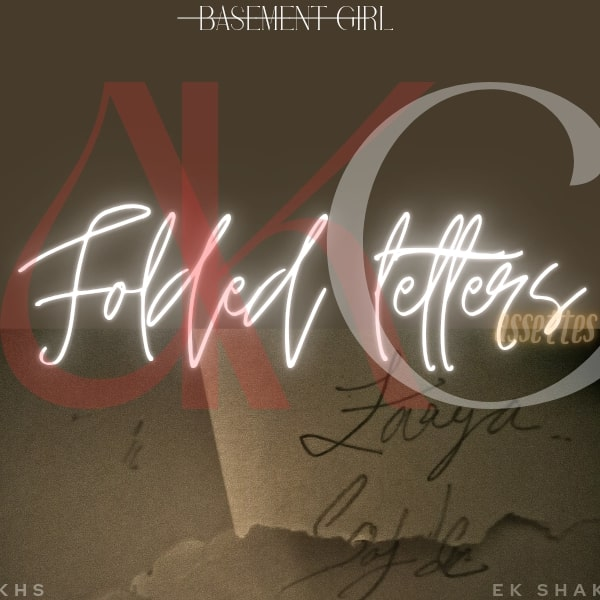

Zaaya (Sajde -B)
 TAP TO PLAY(fallback-link)
Sajde kiye hote khuda ke maine agar,
Chodh ke na jaata woh bhi iss qadar..
Sajde kiye hote khuda ke maine agar,
Chodh ke na jaata woh bhi iss qadar..
Sajda kiyaa...
Sajda kiya tera hi maine magar,
Iss liye gaya mujhe chodh kar....
Zaaya raatein, Zaaya din bhi..
Zaaya meri har hasii hai...
Zaaya dhadkan, Zaaya saansein..
Zaaya meri har khushi hai...
Naa shikayat, naa gila hai..
Jo tha mera woh gaya hai...!!
Bss yaadon ka ek saaya,
Jo har sajde roya hai....
Tu Chaahat,
Mohabbat,
Ibaadat...!!
Tu Chaahat,
Mohabbat,
Ibaadat...!!
Tuu..
Dhadkane iss dil ki ab kyun na sunu?,
Hai basaa yaadon mein ab bss tu hi kyun?..
Dhadkane iss dil ki ab kyun na sunu?,
Hai basaa yaadon mein ab bss tu hi kyun?..
Tu na milaa..
Tu na mila toh sab se keh kar alvida,
Na aaunga kabhi phir laut kar....
Zaaya lamhein, Zaaya waadey..
Zaaya meri wafaa rahi hai...
Zaaya pal woh, Zaaya baatein..
Zaaya meri har khushi hai...
Zaaya jazbaat, Zaaya dil bhi..
Zaaya meri har kami hain...
Zaaya sapne, Zaaya apnе..
Zaaya meri zindagi hai....
Tu Chaahat,
Mohabbat,
Ibaadat...!!
Tu Chaahat,
Mohabbat,
Ibaadat...!!
Tuu..
Paaya jo..khoyaa kyun?...
Chaahat,
Mohabbat,
Ibaadat thi tu...!!
Woo-o-hoo, Wo-hoo , oo-hoo
Woo-o-hoo, Wo-hoo, oo-hoo